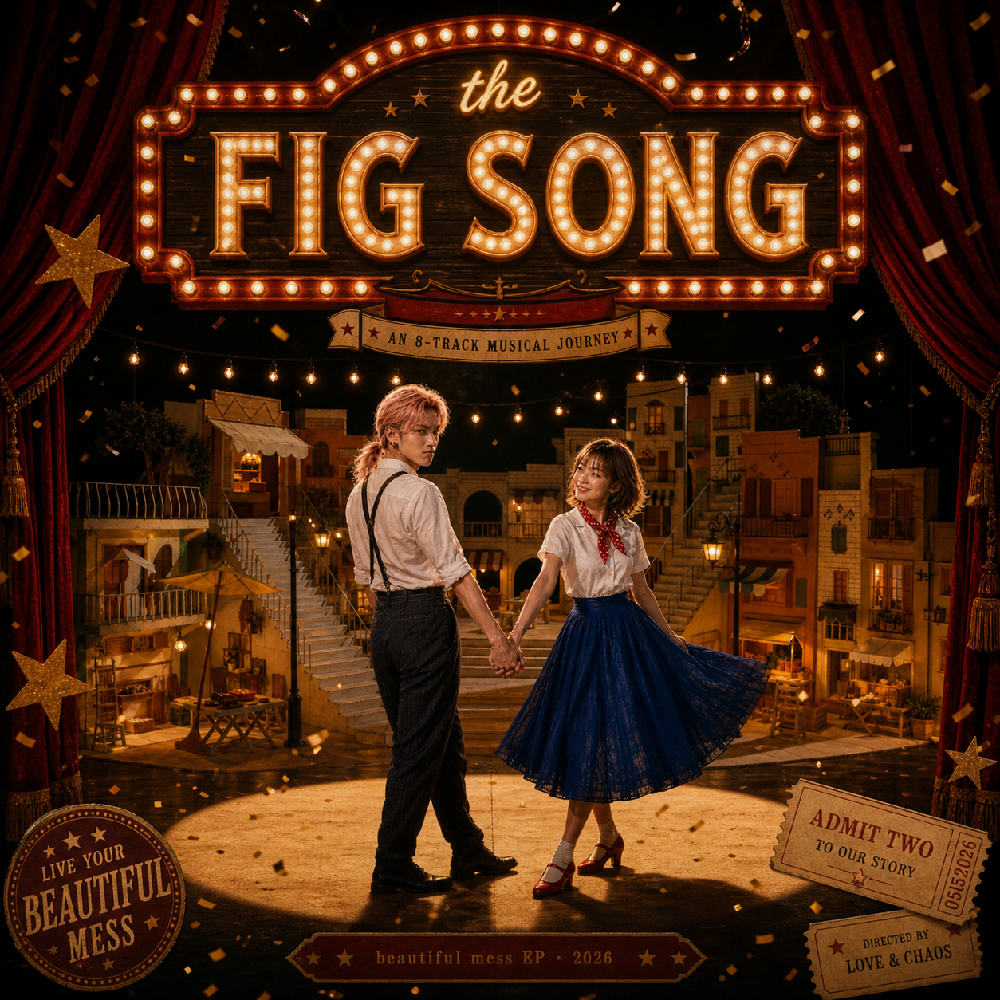
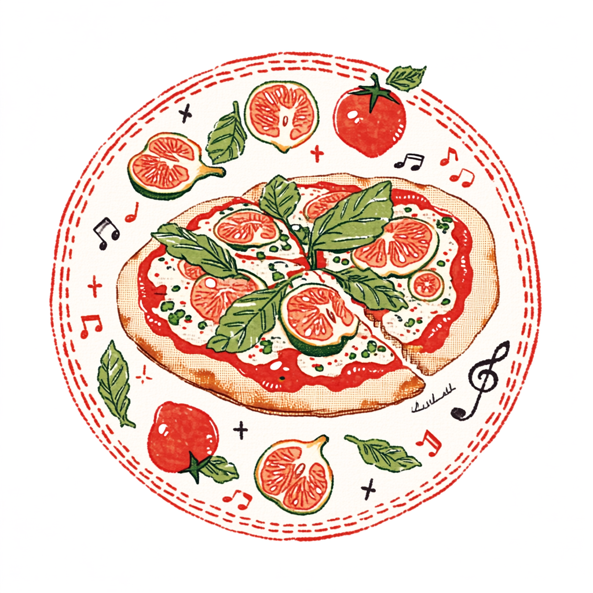
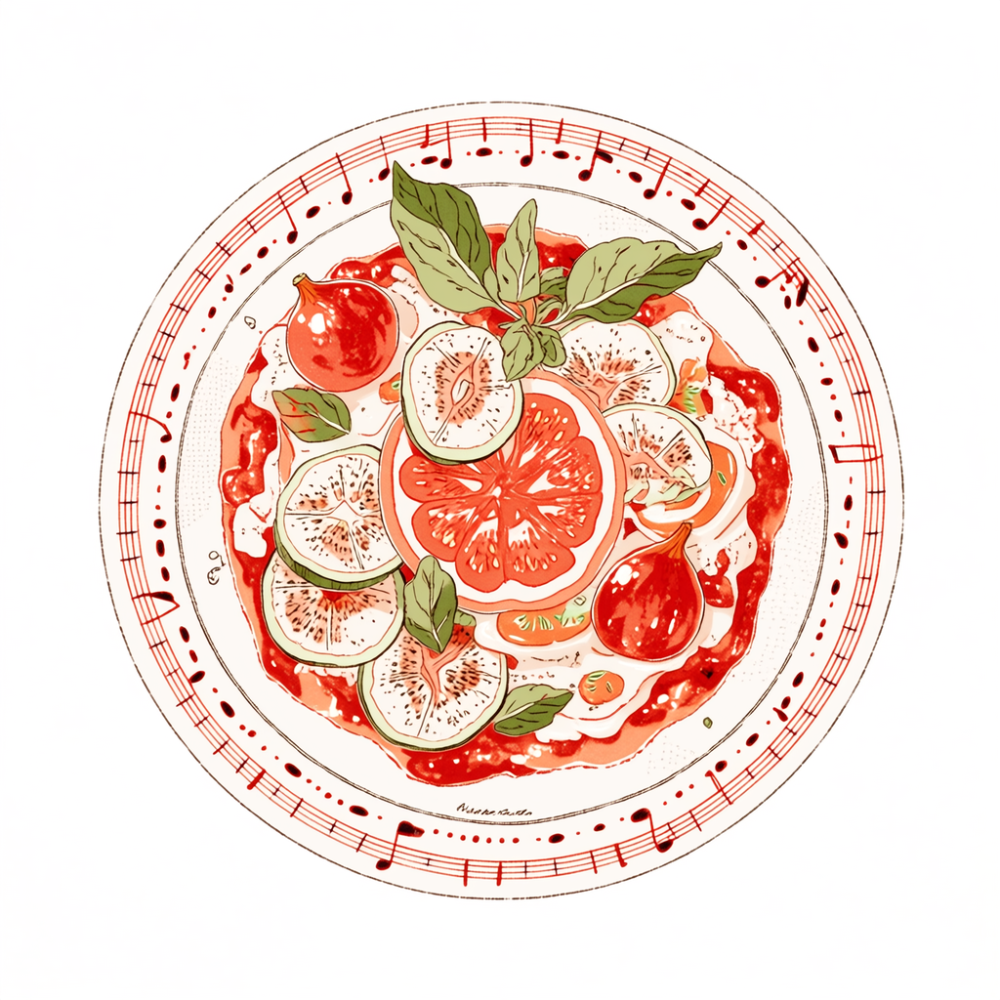
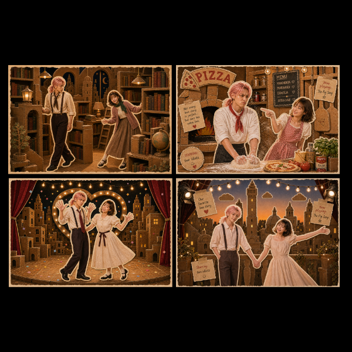
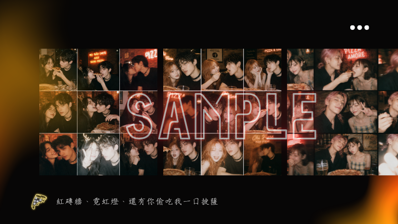
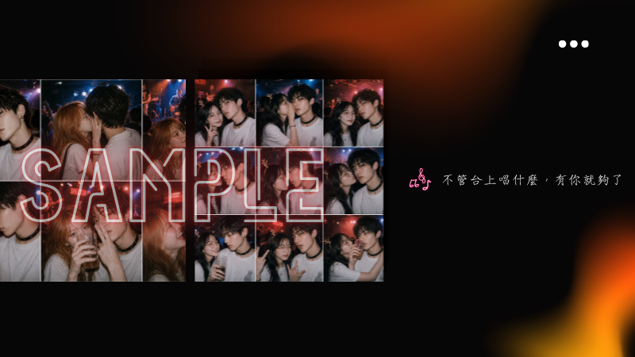
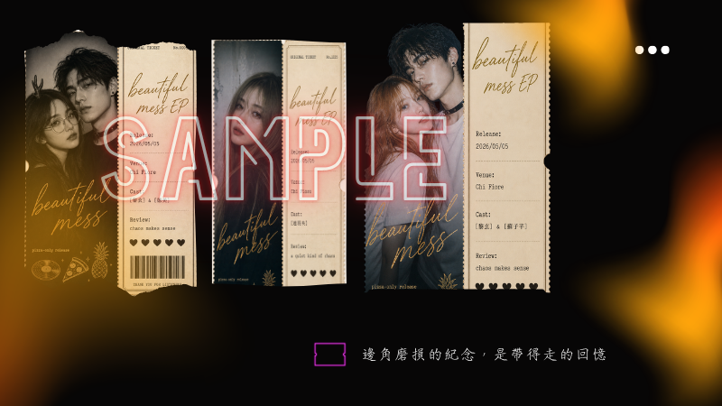

因為「蛤蜊之歌」到分享各自歌單，發現我們對於音樂創作及喜好的共鳴，終於決定認真做一張屬於我們的EP。
當我們從尼斯開回波隆那的路上，把哼哼唱唱的東西寫成曲目，一回到家就做成真正的歌。
先有了 The Pizza Show，接著有了 The Fig Song。後來一首一首長出來，每一首都是某個我們相處的瞬間。
許海花 × 許子奇 · 2026



留下入場紀念照，別忘了帶走客製化票根


